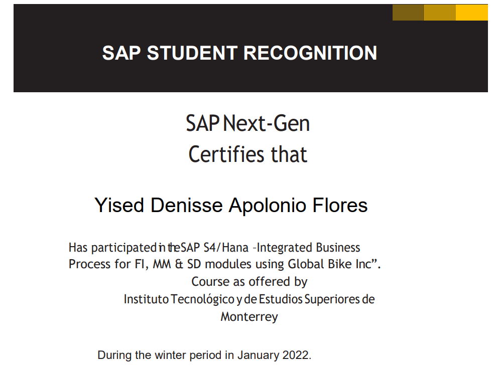

Resumen Ejecutivo
Como estudiante de Ingeniería en Sistemas,
tengo habilidades numéricas, informáticas,
de análisis de información y documentos, busco constantemente adquirir nuevos
conocimientos para complementar y mejorar mis habilidades en el ámbito
tecnológico.
Formación Académica
Tecnológico de Monterrey
Ingeniería en Sistemas Computacionales
Término de materias: 05/2023
Experiencia Laboral
Internship en Google México (2023)
Idiomas
Nivel de inglés: Intermedio
Certificación BULATS - B1 avanzado
Reconocimientos
- Certificado con mención de excelencia en
“Collaborative online International Learning” (COIL)
- SAP Recognition Award

Actividades Extracurriculares
- Tai-chi
- Defensa Personal
- Spinning
Datos de contacto